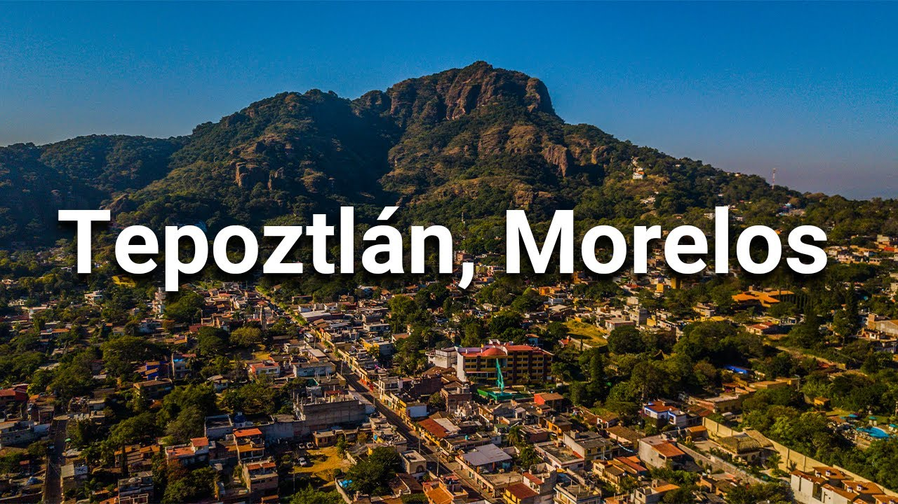
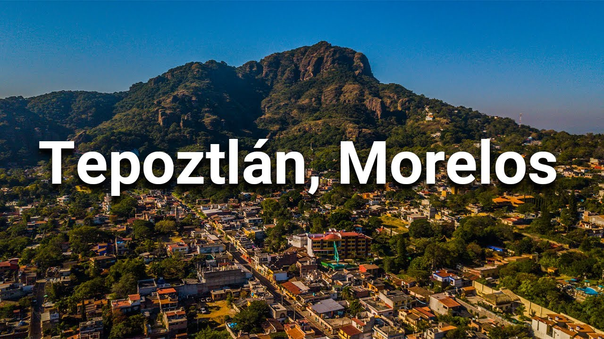
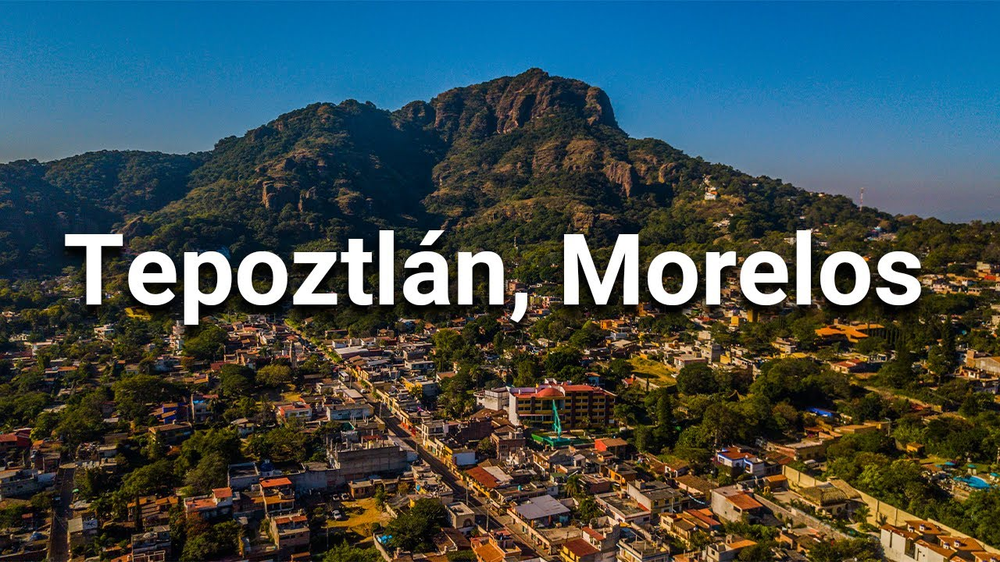
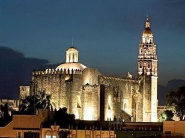
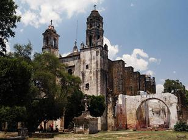
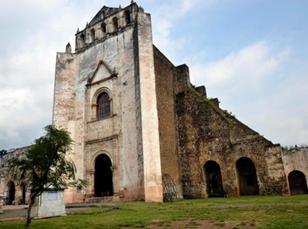
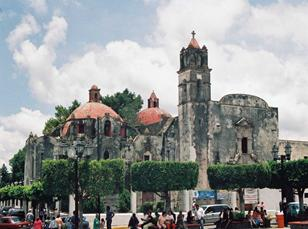

Morelos
 

Morelos

Introducción
El estado de Morelos es uno de los más pequeños de la Republica Mexicana, pero uno de los mayores en cuanto a sus bellezas y atractivos turísticos.
Cuernavaca
Cuernavaca es una de las ciudades más antiguas de México fundada, unos cuantos años después de la consumación de la Conquista, por Hernán Cortés quien la eligió como lugar de descanso. Desde los tiempos prehispánicos, el valle de Cuaunáhuac fue uno de los favoritos del centro del país por la bondad de su clima y la fertilidad de sus tierras. A partir de la Conquista, Cuernavaca fue el principal núcleo urbano de la región y, ya en el México independiente, se convirtió en la capital del estado de Morelos.
Tepoztlán
Tepoztlán es un destino turístico místico, rodeado de magia, tradiciones y leyendas. La población, erigida como guardián al pie del cerro del Tepozteco, es una de las más pintorescas del centro de la República Mexicana. Sus calles, plazas, construcciones resguardan celosamente lenguas, costumbres, artesanías, alimentos que recuerdan su pasado colonial y prehispánico.
Tlayacapan
Tlayacapan, el lugar de los límites o la punta de la montaña, es una joya poco conocida en el estado de Morelos, a unos cuantos kilómetros de la Ciudad de México. Durante los tiempos prehispánicos tuvo una gran importancia por su estratégica ubicación geográfica. En la época colonial se convirtió en uno de los principales centros económicos y religiosos de toda la región y en el México independiente su importancia decreció hasta ahora que resurge gracias al turismo impulsado por su gran belleza natural y sus tesoros culturales.
Cuautla
Cuautla, cuyo nombre significa nido de águilas, es la segunda ciudad más importante del estado de Morelos y un tesoro natural y cultural del centro de México. Se le llama Cuautla la heroica e histórica, debido a los acontecimientos que en ella se han verificado y que han tenido una gran relevancia en la historia mexicana.
¿Qué tipos de posgrado
existen?

¿Cómo elegir un
posgrado?
Si te interesa continuar tus estudios e ingresar a un
programa de posgrado, te brindamos las siguientes
recomendaciones:
1.Infórmate sobre las características de los
posgrados
Existen diversos tipos de posgrados en la UNAM y en otras
instituciones educativas, tanto públicas como privadas. Te recomendamos que te informes sobre sus
características:
- El tipo de posgrado: Especialización, Maestría y
Doctorado.
- Su modalidad: si son profesionalizantes o de
investigación.
- Si son de tiempo completo o de tiempo parcial.
- Si tienen algún costo o te ofrecen una beca.
- Si pertenecen al Programa Nacional de Posgrados
de Calidad.
- Si cuentan con opciones de movilidad al extranjero.
2. Analiza las razones por las cuáles te
interesa estudiar un posgrado
Existen dos razones importantes para considerar el estudio de un posgrado, las cuales son: Razones académicas: están vinculadas a tus intereses sobre contenidos escolares, tales como los aprendidos en las materias, trabajos escolares, experiencias académicas, etc. Razones profesionales: se relacionan con tus intereses sobre el campo laboral que adquiriste en tu servicio social o en prácticas profesionales, investigaciones, experiencia laboral, etc.